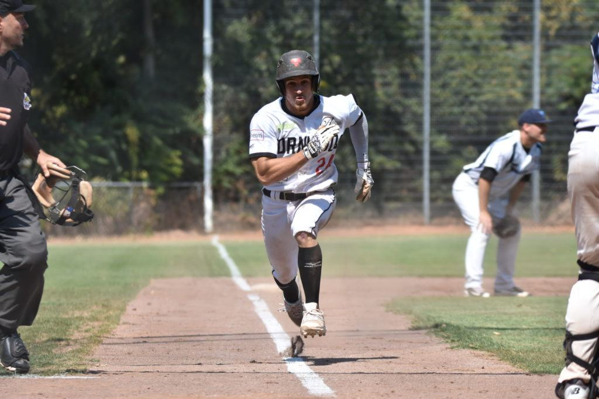
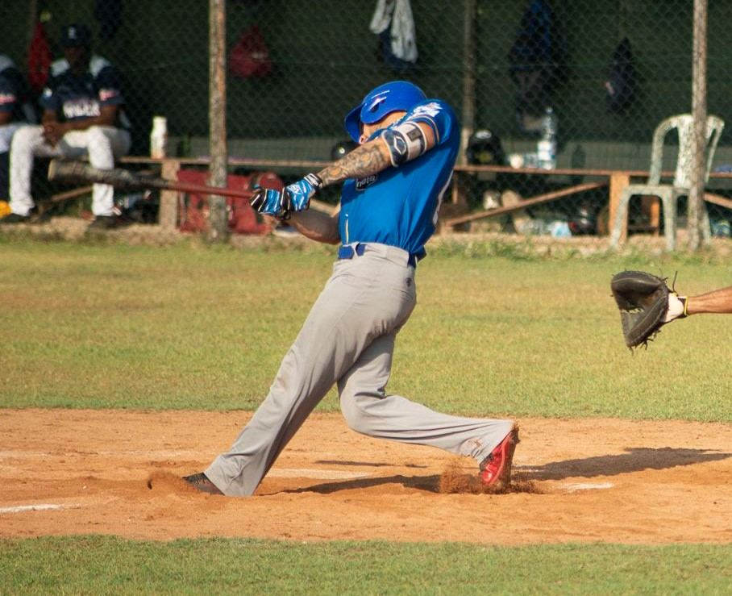

È oramai ufficiale l’unificazione delle categorie per la prossima Serie A 2021, come è certa anche la formula con la quale i 33 team si affronteranno.
Tale formula prevede una prima fase in cui le formazioni ex A1 (8 squadre) e quelle ex A2 (25) resteranno separate; le fasi successive invece, che prevedono anche possibili gare incrociate, delineeranno chi lotterà per lo scudetto, chi per la Coppa Italia e chi per mantenere la propria permanenza in categoria.
Restano molte perplessità per questa nuova e complessa formula, non è escluso che vi siano modifiche dell’ultimo momento.
La CSO-Panamed Lancers è stata inserita nel Girone E, unico a 5 squadre, insieme a Fiorentina, Longbridge Bologna, Athletics Bologna e New Rimini Baseball.
Girone tutt’altro che facile; la Fiorentina lo scorso anno ha sfiorato la promozione in Serie A1, Longbridge da sempre vivaio della Fortitudo è un team giovane ma talentuoso.
Gli Athletics vantano diversi anni in categoria e gli utlimi colpi di mercato fanno percepire le serie intenzioni della società; come del resto Rimini che nonostante sia una neopromossa ha tanti giovani di interesse nazionale e molta voglia di tornare ai vertici.
Sono previste ben quatto retrocessioni con questa formula, per questo la società nella persona del DS Ciappi ha deciso di aggiungere al roster un elemento da novanta, come le miglia che ha nel braccio.
Siamo felici quindi di annunciare l’arrivo dal Venezuela Vicente Moises Colasante.

Giocatore poliedrico, classe 1994, con importanti caratteristiche offensive, nel 2019 in forza al Salerno Thunders ha dimostrato il suo valore con numeri e prestazioni degne di nota.
I Chicago Cubs l’hanno firmato nel gennaio 2013 e l’anno successivo è stato assegnato alla Rookie League al Venoco Sports Complex, a Valencia; ha disputato nelle minors due stagioni (2014 e 2016) con una media battuta di .176 (il profilo dal sito MILB).
Nella stagione 2018 il trasferimento nella Bundesliga tedesca con i Mannheim Tornados, per lui una media battuta di .382 con 3 HR e 16 RBI in soli 55 AB.
Vicente, con la casacca giallo/azzurra del Salerno nella passata stagione ha segnato numeri da fuoriclasse con una media battuta di .438, 39 valide di cui 5 fuoricampi e ben 30 RBI.
A questi numeri si aggiungono 24.2 inning lanciati con una media punti subiti di 1.82 e 41 strikeout.
Non solo una ottima mazza ma anche un gran braccio che aiuterà il monte lastrigiano nella partita dello straniero.
Il DS Ciappi, lo staff tecnico ed il consiglio societario si dicono molto soddisfatti di questo innesto: un altro tassello per formare una squadra da Serie A è stato posizionato.